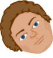
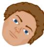

Ocular Motor Disorders
Reset
The Cover Test (heterotropia)
The Cover Test (heterophoria)
Ocular Motility Disorders
Three step technique for diagnosing a fourth nerve palsy
In this example, a left hypertropia greater in right gaze, and greater in left head tilt, fits the Three Step Test criteria for a left superior oblique palsy (or a left Fourth Cranial Nerve Palsy).
On smaller screens this app will look better in landscape (please rotate the screen).
Currently showing normal eye movement. Use the mouse to move the eyes.
Complete right third nerve palsy
In this example the right eye is divergent and slightly depressed
(“down and out”). There is full movement on dextro version, but the right
eye is limited on laevo version. The right eye is also limited on all
elevated and depressed positions. Note that the right pupil is dilated
and the patient would also present with a ptosis.
Left sixth nerve palsy
In this example the left eye cannot abduct beyond the midline in the
direction of the affected lateral rectus muscle. There is also a left
esotropia in primary position.
Right fourth nerve palsy
The right eye shows an under-action on laevo depression in the direction of
the affected superior oblique muscle. There is also a right hypertopia
in primary position.
Left orbital floor blow out with inferior rectus entrapment
In some cases of orbital floor fracture, the inferior rectus and associated
orbital tissue can get trapped in the fracture. This has the effect of
restricting ocular movement in the opposite direction due to mechanical
tethering. In this example, you can see that the left eye does not move
above the midline.
Exophoria
Here the eyes are initially aligned. When you perform the cover-uncover test there
is no movement of the uncovered eye. However, you will see the previously covered
eye make an inward movement. Use the translucent cover option to see how the eye
is moving under the cover. When you perform the alternating cover test you will
see both eyes make an inward movement once uncovered.
Esophoria
Here the eyes are initially aligned. When you perform the cover-uncover test there
is no movement of the uncovered eye. However, you will see the previously covered
eye make an outward movement. Use the translucent cover option to see how the eye
is moving under the cover. When you perform the alternating cover test you will
see both eyes make an outward movement once uncovered.
Dissociated Vertical Deviation
This is a condition that can sometimes be seen in patients with Infantile
esotropia or exotropia or where there is poor vision. One eye tends to drift
upwards upon occlusion, although it can also occur without dissociation. It
is commonly bilateral.
Hyperphoria
Here the eyes are initially aligned. When you perform the cover-uncover test
there is no movement of the uncovered eye. However, when you uncover the right
eye you will see this eye move downwards. When you uncover the left eye you will
see this eye move upwards. Use the translucent cover option to see how the eye
is moving under the cover. When recording vertical phoria's we usually refer
to the higher eye, so this example would be termed a right hyperphoria or R/L.
Alternating Esotropia
Here, the left eye is initially turned inwards. When you cover the right eye,
the left eye now takes up fixation. However, when you remove the cover, the
right eye remains convergent as the patient is able to fixate equally well
with either eye. This is called an alternating esotropia.
Alternating Exotropia
Here, the right eye is initially turned outwards. When you cover the left eye,
the right eye now takes up fixation. However, when you remove the cover, the right
left remains divergent as the patient is able to fixate equally well with either eye.
This is called an alternating exotropia.
Right Esotropia
In this example the right eye is initially turned inwards. When you cover the
left eye, the right eye takes up fixation. It then returns to its convergent
position once uncovered.
Left Exotropia
The left eye is turned outwards. When you cover the right eye, the left eye
takes up fixation. It then returns to the divergent position once uncovered.
Left Hypertropia
The left eye is turned upwards. When you cover the right eye the left eye moves down to
fixate. It then elevates again when you remove the cover.
Step 1: Hypertropia in primary gaze.
In order to diagnose whether the cause of a hypertropia is a fourth nerve palsy
you can perform the three step technique. Firstly, establish which eye is hypertropic
in the primary position. Here it is the left eye.
Step 2: Determine whether the hypertropia is greater in left or right gaze.
Secondly examine how the size of the hypertropia changes on lateral gaze.
A hypertropia caused by a fourth nerve palsy will increase in contralateral gaze.
In the example here, the hypertropia is larger in dextro version and smaller in laevo
version.
Step 2a: Test the right gaze. The above shows increased hypertropia of the left eye.
Step 2: Determine whether the hypertropia is greater in left or right gaze.
Secondly examine how the size of the hypertropia changes on lateral gaze.
A hypertropia caused by a fourth nerve palsy will increase in contralateral gaze.
In the example here, the hypertropia is larger in dextro version and smaller in laevo
version.
Step 2b: Test the left gaze. The above shows minimal hypertropia.
Step 3: Determine whether the hypertropia is greater in left or right head tilt.

In the third step, compare the hypertropia with the patients head tilted to the left
and right. A hypertropia due to a fourth nerve palsy should increase when tilted to
the same shoulder.
Step 3a: Right head tilt: there is a small hypertropia.
Step 3: Determine whether the hypertropia is greater in left or right head tilt.

In the third step, compare the hypertropia with the patients head tilted to the left
and right. A hypertropia due to a fourth nerve palsy should increase when tilted to
the same shoulder.
Step 3b: Left head tilt: there is a larger hypertropia.